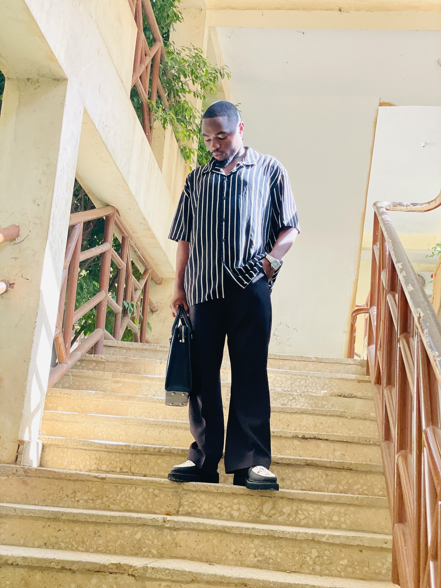

SAMSON ILORIN · LAWRENXO
I am Lawrenxo — a Petroleum Engineering graduate building at the intersection of business, sales, marketing, networking and entrepreneurship.

THE JOURNEY
A platform built around relationships, ideas, business and meaningful opportunities.
ABOUT ME
My academic background is in Petroleum Engineering, but my ambitions extend beyond a single field.
I have developed a strong interest in the business side of things — understanding people, creating relationships, promoting products, communicating value and identifying opportunities.
Today, I am deliberately building experience across sales, marketing, networking and entrepreneurship.
I am still on the journey, and that is part of the story.
WHAT I DO
Building meaningful professional relationships with entrepreneurs, professionals, brands, organizations and people with ideas worth exploring.
→Helping products and businesses gain attention, communicate their value and create pathways toward customer action.
→Exploring practical ways brands can position themselves, reach people and turn visibility into meaningful opportunities.
→OPEN TO
I am interested in conversations and collaborations that create genuine value.
BUILDING IN PUBLIC
The lessons, conversations, opportunities, mistakes and experiences that come with deliberately building a career and personal brand.
FOLLOW THE JOURNEY →LET'S CONNECT
Whether you're a brand, entrepreneur, business owner, professional or simply someone with an interesting opportunity, I'd love to hear from you.